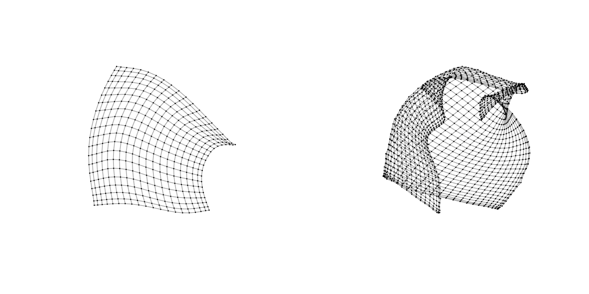
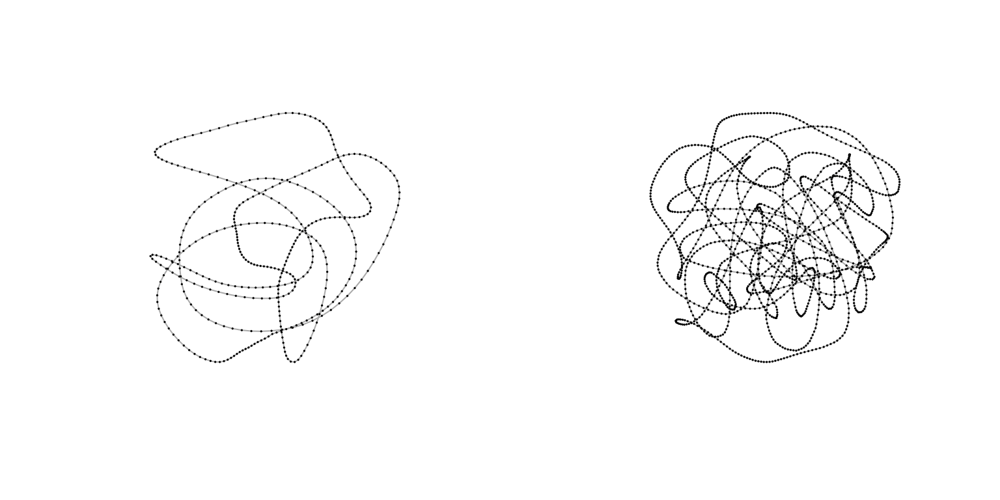
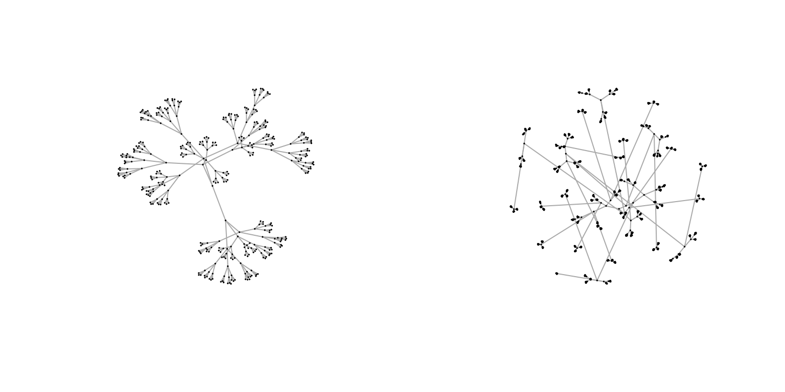
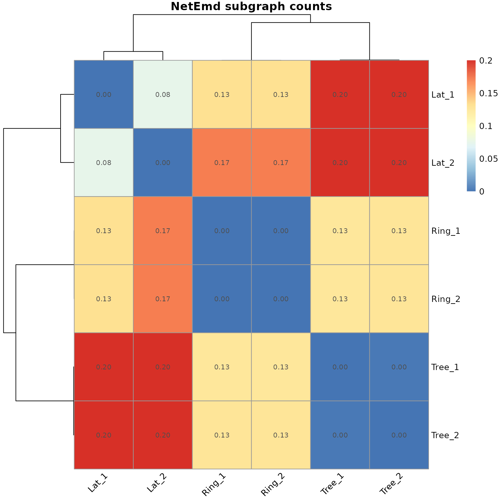
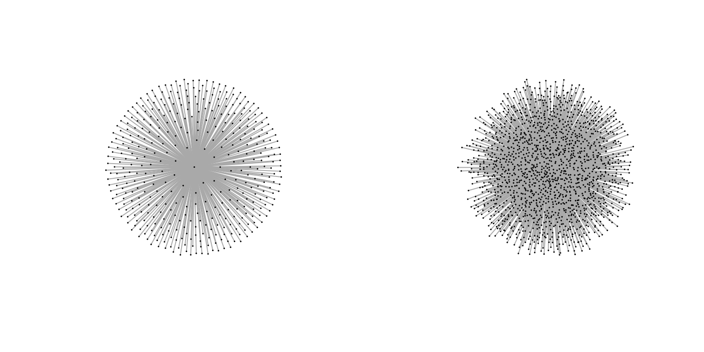

Simple and quick (default) usage 3: many to many comparisons
23/06/2020
ManyToMany.RmdIntroduction
In some situations there is a need to compare multiple graphs among each other. For such situations, the netdist package contains some initial shortcut functions that perform such calculation and may automatically (Unix) incorporate parallel processing.
This vignette does not show details about the Netdis and NetEmd network comparison methods or their variants, please check “Simple and quick (default) usage 1: pairwise comparisons” for these details. Instead, this vignette shows the default usage of the shortcut functions for many-to-many comparisons.
Please note that for high performance computations these shortcut functions may not be ideal, particularly in terms of RAM consumption.
For other vignettes in this package see the “Menu”.
Compare multiple networks via NetEmd
(Extracted from Wegner et al. (2017)): NetEmd is based on the idea that the information encapsulated in the shape of the degree distribution and other network properties which reflect the topological organization of the network. From an abstract point of view, NetEmd views the shape of a distribution as a property that is invariant under linear deformations i.e. translations and re-scalings of the axis.
Networks being compared
Generation of regular grid, ring and tree-like networks with 400 nodes and 1600 nodes. The plots of these networks illustrate clearly their structural differences.
# Create networks
set.seed(3171)
gLat_1 <- igraph::graph.lattice(c(20,20))
gLat_2 <- igraph::graph.lattice(c(40,40))
gRing_1 <- igraph::make_ring(20^2)
gRing_2 <- igraph::make_ring(40^2)
gTree_1 <- igraph::as.undirected( make_tree(n = 20^2,children = 3) )
gTree_2 <- igraph::as.undirected( make_tree(n = 40^2,children = 3) )
par(mfrow=c(1,2))
plot(gLat_1,vertex.size=0.8,vertex.label=NA)
plot(gLat_2,vertex.size=0.8,vertex.label=NA)


NetEmd using subgraph counts
Subgraph count based NetEmd comparisons:
# NetEMD using subgraph counts.
glist <- list(Lat_1=gLat_1, Lat_2=gLat_2, Ring_1=gRing_1, Ring_2=gRing_1, Tree_1=gTree_1, Tree_2=gTree_2)
netemdlist <- netemd_many_to_many(graphs = glist,smoothing_window_width = 1,mc.cores = 1) #Use of smoothing window 1 is given for discrete integer distributions. If the network features are considered continuous variables smoothing_window_width equal to zero is recommended.
netemdlist
#> $netemds
#> [1] 0.076627846 0.133149779 0.133149779 0.203199795 0.203500020 0.174670019
#> [7] 0.174670019 0.202314235 0.201886062 0.000000000 0.127115909 0.128284610
#> [13] 0.127115909 0.128284610 0.003359703
#>
#> $comp_spec
#> name_a name_b index_a index_b
#> 1 Lat_1 Lat_2 1 2
#> 2 Lat_1 Ring_1 1 3
#> 3 Lat_1 Ring_2 1 4
#> 4 Lat_1 Tree_1 1 5
#> 5 Lat_1 Tree_2 1 6
#> 6 Lat_2 Ring_1 2 3
#> 7 Lat_2 Ring_2 2 4
#> 8 Lat_2 Tree_1 2 5
#> 9 Lat_2 Tree_2 2 6
#> 10 Ring_1 Ring_2 3 4
#> 11 Ring_1 Tree_1 3 5
#> 12 Ring_1 Tree_2 3 6
#> 13 Ring_2 Tree_1 4 5
#> 14 Ring_2 Tree_2 4 6
#> 15 Tree_1 Tree_2 5 6To read the results in a matrix form:
# Creating a comparison matrix:
mat <- cross_comp_to_matrix(measure = netemdlist$netemds, cross_comparison_spec = netemdlist$comp_spec)
mat
#> Lat_1 Lat_2 Ring_1 Ring_2 Tree_1 Tree_2
#> Lat_1 0.00000000 0.07662785 0.1331498 0.1331498 0.203199795 0.203500020
#> Lat_2 0.07662785 0.00000000 0.1746700 0.1746700 0.202314235 0.201886062
#> Ring_1 0.13314978 0.17467002 0.0000000 0.0000000 0.127115909 0.128284610
#> Ring_2 0.13314978 0.17467002 0.0000000 0.0000000 0.127115909 0.128284610
#> Tree_1 0.20319979 0.20231423 0.1271159 0.1271159 0.000000000 0.003359703
#> Tree_2 0.20350002 0.20188606 0.1282846 0.1282846 0.003359703 0.000000000Illustration of the multiple NetEmd comparisons based on subgraph counts.
netemd.plot(netemdlist=netemdlist,clustering_method="ward.D",main="NetEmd subgraph counts")
NetEmd using the Laplacian and Normalized Laplacian Spectrum
Pre-compute the Laplacian and normalized Laplacian for each graph considered:
# NetEMD using the Laplacian and normalized Laplacian Spectrum.
SPECT<-list()
#This step may take several minutes.
for(i in 1:length(glist)){
Lapg <- igraph::laplacian_matrix(graph = glist[[i]],normalized = FALSE,sparse = FALSE)
NLap <- igraph::laplacian_matrix(graph = glist[[i]],normalized = TRUE,sparse = FALSE)
SPECT[[ names(glist)[i] ]] <- cbind(L.Spectra= eigen(Lapg)$values, NL.Spectra= eigen(NLap)$values)
}
str(SPECT)
#> List of 6
#> $ Lat_1 : num [1:400, 1:2] 7.95 7.88 7.88 7.8 7.76 ...
#> ..- attr(*, "dimnames")=List of 2
#> .. ..$ : NULL
#> .. ..$ : chr [1:2] "L.Spectra" "NL.Spectra"
#> $ Lat_2 : num [1:1600, 1:2] 7.99 7.97 7.97 7.95 7.94 ...
#> ..- attr(*, "dimnames")=List of 2
#> .. ..$ : NULL
#> .. ..$ : chr [1:2] "L.Spectra" "NL.Spectra"
#> $ Ring_1: num [1:400, 1:2] 4 4 4 4 4 ...
#> ..- attr(*, "dimnames")=List of 2
#> .. ..$ : NULL
#> .. ..$ : chr [1:2] "L.Spectra" "NL.Spectra"
#> $ Ring_2: num [1:400, 1:2] 4 4 4 4 4 ...
#> ..- attr(*, "dimnames")=List of 2
#> .. ..$ : NULL
#> .. ..$ : chr [1:2] "L.Spectra" "NL.Spectra"
#> $ Tree_1: num [1:400, 1:2] 7.01 6.92 6.89 6.73 6.6 ...
#> ..- attr(*, "dimnames")=List of 2
#> .. ..$ : NULL
#> .. ..$ : chr [1:2] "L.Spectra" "NL.Spectra"
#> $ Tree_2: num [1:1600, 1:2] 7.16 7.09 7.05 7.05 6.95 ...
#> ..- attr(*, "dimnames")=List of 2
#> .. ..$ : NULL
#> .. ..$ : chr [1:2] "L.Spectra" "NL.Spectra"Compute NetEmd:
netemdlist <- netemd_many_to_many(dhists = SPECT,smoothing_window_width = 0) #Use of smoothing window 1 is given for discrete integer distributions. If the network features are considered continuous variables smoothing_window_width equal to zero is recommended.
#> [1] "This function will compute orbits of graphlets up to size 5 using 2 cores. Depending on the density and size of the graphs, this may lead to a large compsumption of RAM."
netemdlist
#> $netemds
#> [1] 1.276256e-02 2.131502e-01 2.131502e-01 3.227064e-01 3.226407e-01
#> [6] 2.151625e-01 2.151625e-01 3.242913e-01 3.241844e-01 2.220446e-16
#> [11] 3.869593e-01 3.864726e-01 3.869593e-01 3.864726e-01 4.268586e-03
#>
#> $comp_spec
#> name_a name_b index_a index_b
#> 1 Lat_1 Lat_2 1 2
#> 2 Lat_1 Ring_1 1 3
#> 3 Lat_1 Ring_2 1 4
#> 4 Lat_1 Tree_1 1 5
#> 5 Lat_1 Tree_2 1 6
#> 6 Lat_2 Ring_1 2 3
#> 7 Lat_2 Ring_2 2 4
#> 8 Lat_2 Tree_1 2 5
#> 9 Lat_2 Tree_2 2 6
#> 10 Ring_1 Ring_2 3 4
#> 11 Ring_1 Tree_1 3 5
#> 12 Ring_1 Tree_2 3 6
#> 13 Ring_2 Tree_1 4 5
#> 14 Ring_2 Tree_2 4 6
#> 15 Tree_1 Tree_2 5 6Illustration of the multiple NetEmd comparisons based on the Laplacian and Normalized Laplacian spectra
netemd.plot(netemdlist=netemdlist,clustering_method="ward.D",main="NetEmd Spectra")
Compare two networks via Netdis and its variants
(Extracted from Ali et al. (2014)): Netdis counts small subgraphs \(w\) on \(k\) nodes for all 2-step ego-networks, \(k=3,4,5\). These counts are centred by subtracting the expected number of counts \(E_w\). These centred counts of each network are then compared among one another thus leading to the Netdis statistic.
Using Netdis with a reference or gold-standard graph to obtain the expectations \(E_w\)
The selection of a gold-standard graph as a substitute for a theoretical \(E_w\) could be considered when such graph is known to be a good proxy for \(E_w\), or alternatively as a good reference point for the comparison. This Netdis variant focuses on detecting discrepancies between the networks relative to the ego-network structure of the reference network / gold-standard.
Netdis using reference or gold-standard networks
Generation of regular grid, ring and tree-like networks with 400 nodes and 1600 nodes. Reference graphs given by start-like graphs are used as illustration of reference graphs. The plots of these networks illustrate clearly their structural differences.
# Create networks
set.seed(3171)
gLat_1 <- igraph::graph.lattice(c(20,20))
gLat_2 <- igraph::graph.lattice(c(40,40))
gRing_1 <- igraph::make_ring(20^2)
gRing_2 <- igraph::make_ring(40^2)
gTree_1 <- igraph::as.undirected( make_tree(n = 20^2,children = 3) )
gTree_2 <- igraph::as.undirected( make_tree(n = 40^2,children = 3) )
# Create a random graph to be used as a gold-standard
gst_1 <- igraph::as.undirected( graph.star(20^2) )
gst_2 <- igraph::as.undirected( graph.star(40^2) )
par(mfrow=c(1,2))
plot(gst_1,vertex.size=0.8,vertex.label=NA)
plot(gst_2,vertex.size=0.8,vertex.label=NA)
Obtain the comparison via Netdis using each of the reference graph networks.
glist <- list(Lat_1=gLat_1, Lat_2=gLat_2, Ring_1=gRing_1, Ring_2=gRing_1, Tree_1=gTree_1, Tree_2=gTree_2)
# Netdis using the goldstd_1 graph as gold-standard reference point
netdis_mat_gst1 <- netdis_many_to_many(graphs = glist, ref_graph = gst_1)
# Netdis using the goldstd_2 graph as gold-standard reference point
netdis_mat_gst2 <- netdis_many_to_many(graphs = glist, ref_graph = gst_2)
netdis_mat_gst1
#> $netdis
#> [,1] [,2] [,3] [,4] [,5] [,6]
#> netdis3 5.551115e-17 0.00000000 0.00000000 0.00000000 0.00000000 0.00000000
#> netdis4 1.923015e-05 0.08801095 0.08801095 0.05118763 0.05046106 0.08686656
#> [,7] [,8] [,9] [,10] [,11] [,12]
#> netdis3 0.00000000 5.551115e-17 0.00000000 0 -1.110223e-16 0.000000
#> netdis4 0.08686656 5.196150e-02 0.05001099 0 1.264028e-01 0.120321
#> [,13] [,14] [,15]
#> netdis3 -1.110223e-16 0.000000 0.000000e+00
#> netdis4 1.264028e-01 0.120321 3.098708e-05
#>
#> $comp_spec
#> name_a name_b index_a index_b
#> 1 Lat_1 Lat_2 1 2
#> 2 Lat_1 Ring_1 1 3
#> 3 Lat_1 Ring_2 1 4
#> 4 Lat_1 Tree_1 1 5
#> 5 Lat_1 Tree_2 1 6
#> 6 Lat_2 Ring_1 2 3
#> 7 Lat_2 Ring_2 2 4
#> 8 Lat_2 Tree_1 2 5
#> 9 Lat_2 Tree_2 2 6
#> 10 Ring_1 Ring_2 3 4
#> 11 Ring_1 Tree_1 3 5
#> 12 Ring_1 Tree_2 3 6
#> 13 Ring_2 Tree_1 4 5
#> 14 Ring_2 Tree_2 4 6
#> 15 Tree_1 Tree_2 5 6
netdis_mat_gst2
#> $netdis
#> [,1] [,2] [,3] [,4] [,5] [,6]
#> netdis3 0.00000e+00 0.00000000 0.00000000 0.00000000 0.00000000 1.110223e-16
#> netdis4 1.25415e-05 0.09558794 0.09558794 0.06087967 0.06231323 9.521044e-02
#> [,7] [,8] [,9] [,10] [,11] [,12]
#> netdis3 1.110223e-16 5.551115e-17 -1.110223e-16 0 0.0000000 -1.110223e-16
#> netdis4 9.521044e-02 5.999573e-02 5.942206e-02 0 0.1541157 1.486546e-01
#> [,13] [,14] [,15]
#> netdis3 0.0000000 -1.110223e-16 0.00000e+00
#> netdis4 0.1541157 1.486546e-01 5.57962e-06
#>
#> $comp_spec
#> name_a name_b index_a index_b
#> 1 Lat_1 Lat_2 1 2
#> 2 Lat_1 Ring_1 1 3
#> 3 Lat_1 Ring_2 1 4
#> 4 Lat_1 Tree_1 1 5
#> 5 Lat_1 Tree_2 1 6
#> 6 Lat_2 Ring_1 2 3
#> 7 Lat_2 Ring_2 2 4
#> 8 Lat_2 Tree_1 2 5
#> 9 Lat_2 Tree_2 2 6
#> 10 Ring_1 Ring_2 3 4
#> 11 Ring_1 Tree_1 3 5
#> 12 Ring_1 Tree_2 3 6
#> 13 Ring_2 Tree_1 4 5
#> 14 Ring_2 Tree_2 4 6
#> 15 Tree_1 Tree_2 5 6To read the results in a matrix form:
# Creating a comparison matrix:
cross_comp_to_matrix(measure = netdis_mat_gst1$netdis, cross_comparison_spec = netdis_mat_gst1$comp_spec)
#> Warning in out[cbind(cross_comparison_spec$index_a,
#> cross_comparison_spec$index_b)] <- measure: number of items to replace is not a
#> multiple of replacement length
#> Warning in out[cbind(cross_comparison_spec$index_b,
#> cross_comparison_spec$index_a)] <- measure: number of items to replace is not a
#> multiple of replacement length
#> Lat_1 Lat_2 Ring_1 Ring_2 Tree_1
#> Lat_1 0.000000e+00 5.551115e-17 1.923015e-05 0.00000000 8.801095e-02
#> Lat_2 5.551115e-17 0.000000e+00 8.801095e-02 0.00000000 5.118763e-02
#> Ring_1 1.923015e-05 8.801095e-02 0.000000e+00 0.05046106 0.000000e+00
#> Ring_2 0.000000e+00 0.000000e+00 5.046106e-02 0.00000000 0.000000e+00
#> Tree_1 8.801095e-02 5.118763e-02 0.000000e+00 0.00000000 0.000000e+00
#> Tree_2 0.000000e+00 0.000000e+00 8.686656e-02 0.08686656 5.551115e-17
#> Tree_2
#> Lat_1 0.000000e+00
#> Lat_2 0.000000e+00
#> Ring_1 8.686656e-02
#> Ring_2 8.686656e-02
#> Tree_1 5.551115e-17
#> Tree_2 0.000000e+00
cross_comp_to_matrix(measure = netdis_mat_gst2$netdis, cross_comparison_spec = netdis_mat_gst2$comp_spec)
#> Warning in out[cbind(cross_comparison_spec$index_a,
#> cross_comparison_spec$index_b)] <- measure: number of items to replace is not a
#> multiple of replacement length
#> Warning in out[cbind(cross_comparison_spec$index_a,
#> cross_comparison_spec$index_b)] <- measure: number of items to replace is not a
#> multiple of replacement length
#> Lat_1 Lat_2 Ring_1 Ring_2 Tree_1
#> Lat_1 0.0000000000 0.00000000 1.254150e-05 0.000000e+00 9.558794e-02
#> Lat_2 0.0000000000 0.00000000 9.558794e-02 0.000000e+00 6.087967e-02
#> Ring_1 0.0000125415 0.09558794 0.000000e+00 6.231323e-02 1.110223e-16
#> Ring_2 0.0000000000 0.00000000 6.231323e-02 0.000000e+00 1.110223e-16
#> Tree_1 0.0955879398 0.06087967 1.110223e-16 1.110223e-16 0.000000e+00
#> Tree_2 0.0000000000 0.00000000 9.521044e-02 9.521044e-02 5.551115e-17
#> Tree_2
#> Lat_1 0.000000e+00
#> Lat_2 0.000000e+00
#> Ring_1 9.521044e-02
#> Ring_2 9.521044e-02
#> Tree_1 5.551115e-17
#> Tree_2 0.000000e+00Heatmap of the Netdis comparisons:
#Network comparisons heatmap with Gold-Standard 1
netdis.plot(netdislist = netdis_mat_gst1, whatrow = 2,main = "Netdis GoldStd-1")
#Network comparisons heatmap with Gold-Standard 2
netdis.plot(netdislist = netdis_mat_gst2, whatrow = 2,main = "Netdis GoldStd-2")
Netdis-GP: Using a Geometric-Poisson approximation
This variant focuses on detecting more general and global discrepancies between the ego-network structures.
# Netdis Geometric-Poisson comparisons
netdis_mat <- netdis_many_to_many(graphs = glist, ref_graph = NULL)
netdis_mat
#> $netdis
#> [,1] [,2] [,3] [,4] [,5] [,6]
#> netdis3 0.000000e+00 0.00000000 0.00000000 0.0000000 0.0000000 0.00000000
#> netdis4 7.705791e-05 0.08924875 0.08924875 0.1465798 0.1292388 0.09027696
#> [,7] [,8] [,9] [,10] [,11] [,12] [,13]
#> netdis3 0.00000000 0.0000000 5.551115e-17 0 0.0000000 0.0000000 0.0000000
#> netdis4 0.09027696 0.1471363 1.325708e-01 0 0.1724175 0.1519148 0.1724175
#> [,14] [,15]
#> netdis3 0.0000000 0.000000000
#> netdis4 0.1519148 0.001268919
#>
#> $comp_spec
#> name_a name_b index_a index_b
#> 1 Lat_1 Lat_2 1 2
#> 2 Lat_1 Ring_1 1 3
#> 3 Lat_1 Ring_2 1 4
#> 4 Lat_1 Tree_1 1 5
#> 5 Lat_1 Tree_2 1 6
#> 6 Lat_2 Ring_1 2 3
#> 7 Lat_2 Ring_2 2 4
#> 8 Lat_2 Tree_1 2 5
#> 9 Lat_2 Tree_2 2 6
#> 10 Ring_1 Ring_2 3 4
#> 11 Ring_1 Tree_1 3 5
#> 12 Ring_1 Tree_2 3 6
#> 13 Ring_2 Tree_1 4 5
#> 14 Ring_2 Tree_2 4 6
#> 15 Tree_1 Tree_2 5 6
netdis.plot(netdislist = netdis_mat, whatrow = 2,main = "Netdis-GP")
Using Netdis with no expectation (\(E_w=0\))
Comparing the networks via their observed ego-counts without centring them, (equivalent to using expectation equal to zero). This variant thus focuses on detecting small discrepancies between the networks.
# Netdis with expectation zero
netdis_mat <- netdis_many_to_many(graphs = glist, ref_graph = 0)
netdis_mat
#> $netdis
#> [,1] [,2] [,3] [,4] [,5] [,6]
#> netdis3 0.000000e+00 0.00000000 0.00000000 0.00000000 0.00000000 0.0000000
#> netdis4 1.441326e-05 0.09797286 0.09797286 0.06257218 0.06490417 0.0978222
#> [,7] [,8] [,9] [,10] [,11] [,12]
#> netdis3 0.0000000 0.00000000 5.551115e-17 0 5.551115e-17 0.0000000
#> netdis4 0.0978222 0.06121592 6.099617e-02 0 1.616725e-01 0.1563972
#> [,13] [,14] [,15]
#> netdis3 5.551115e-17 0.0000000 0.000000e+00
#> netdis4 1.616725e-01 0.1563972 2.932744e-06
#>
#> $comp_spec
#> name_a name_b index_a index_b
#> 1 Lat_1 Lat_2 1 2
#> 2 Lat_1 Ring_1 1 3
#> 3 Lat_1 Ring_2 1 4
#> 4 Lat_1 Tree_1 1 5
#> 5 Lat_1 Tree_2 1 6
#> 6 Lat_2 Ring_1 2 3
#> 7 Lat_2 Ring_2 2 4
#> 8 Lat_2 Tree_1 2 5
#> 9 Lat_2 Tree_2 2 6
#> 10 Ring_1 Ring_2 3 4
#> 11 Ring_1 Tree_1 3 5
#> 12 Ring_1 Tree_2 3 6
#> 13 Ring_2 Tree_1 4 5
#> 14 Ring_2 Tree_2 4 6
#> 15 Tree_1 Tree_2 5 6
netdis.plot(netdislist = netdis_mat, whatrow = 2,main = "Netdis-zero")
Bibliography
W. Ali, T. Rito, G. Reinert, F. Sun, and C. M. Deane. Alignment-free protein interaction network comparison. Bioinformatics, 30:i430–i437, 2014.
L. Ospina-Forero, C. M. Deane, and G. Reinert. Assessment of model fit via network comparison methods based on subgraph counts. Journal of Complex Networks, page cny017, August 2018.
A. E. Wegner, L. Ospina-Forero, R. E. Gaunt, C. M. Deane, and G. Reinert. Identifying networks with common organizational principles. Journal of Complex networks, 2017.
F. Picard, J.-J. Daudin, M. Koskas, S. Schbath, and S. Robin. Assessing the exceptionality of network motifs. Journal of Computational Biology, 15(1):1–20, 2008.